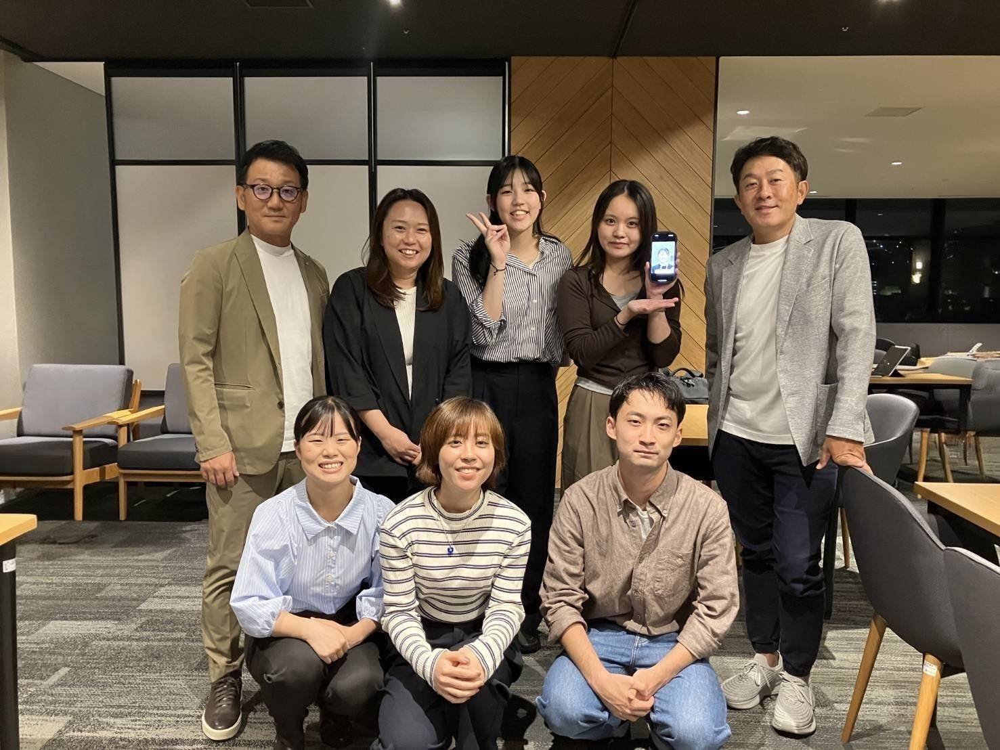

Our Story
Paper Cup Circulation Partnership はどのように始まったか？
PCCPは、叡啓大学と株式会社シンギによる共創プロジェクトを起点として誕生しました。プロジェクトの出発点は、株式会社シンギから提示された「広島県内で資源循環を実現したい」というテーマでした。
食品容器や包装資材を扱う企業として、シンギは環境配慮型素材の普及に取り組む一方で、製品が使用された後の回収や再資源化が十分に進んでいない現状にも課題意識を持っていました。特に、紙コップは環境に配慮した素材として認知されているものの、分別の難しさや回収体制の未整備により、実際には循環されにくいという課題があります。
この課題意識を受け、叡啓大学の学生が中心となり、「広島県内で完結する資源循環の仕組みを構築できないか」と検討を開始しました。
こうして、企業の課題提起と学生の主体的な行動が結びつく形で、紙コップの新たな循環を広島から生み出すプロジェクトとして Paper Cup Circulation Partnership は始動しました。叡啓大学と企業が共に考え、共に動くことで、地域に根ざした持続可能な資源循環の実現を目指しています。

2025年9月24日には、株式会社シンギとの協働の成果を発表する報告会を開催しました。紙コップリサイクルが進まない背景にある提供企業の「見えないコスト」に着目し、叡啓大学の学生がハブとなって企業・地域・消費者をつなぐ持続可能な循環モデルを構想したものです。環境施策を社会実装するには、企業との協働や経済性を踏まえた仕組みづくりが不可欠であることを、あらためて確認する機会となりました。